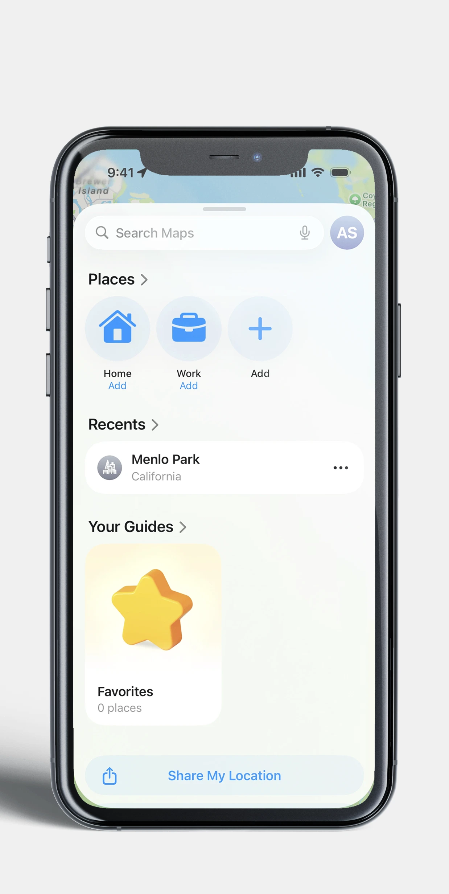
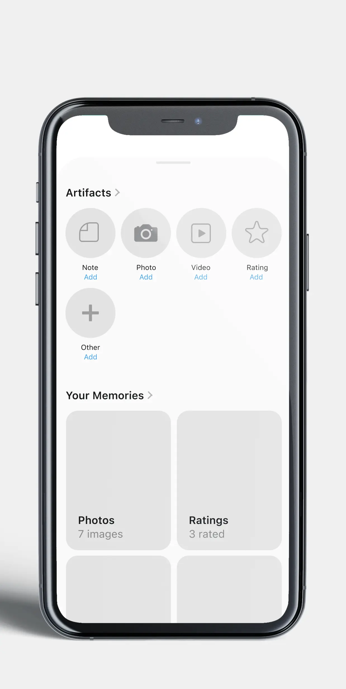
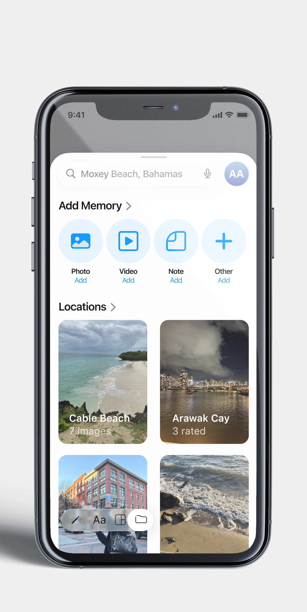
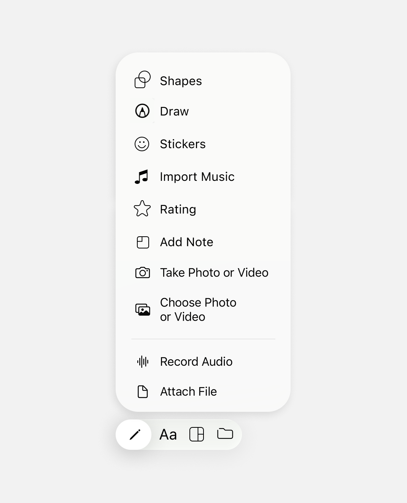
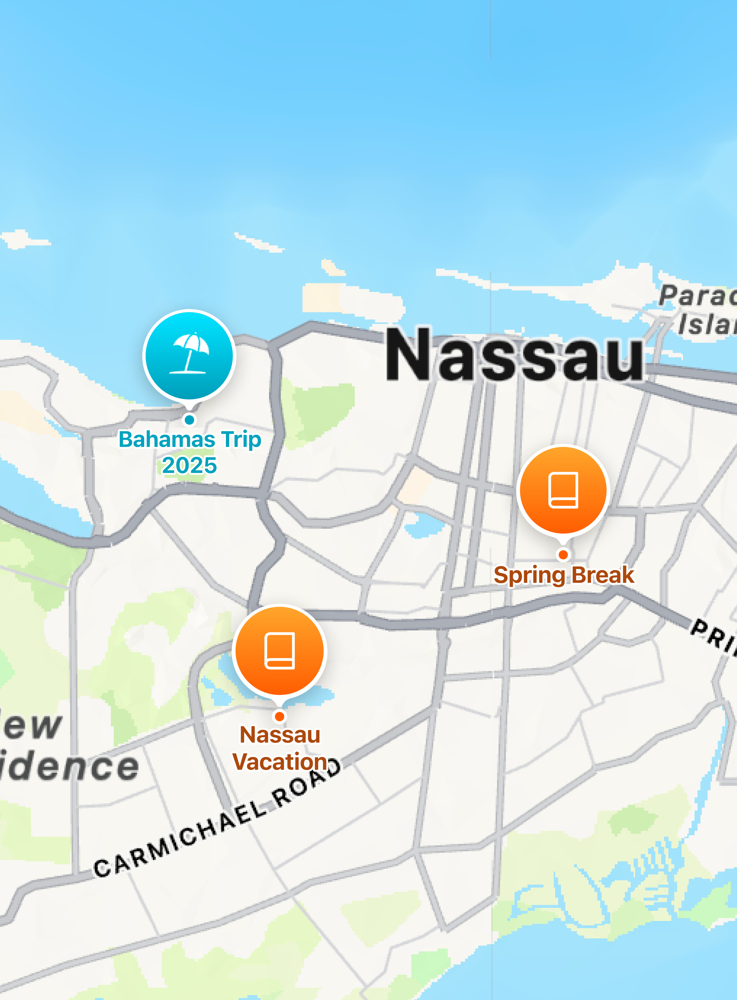
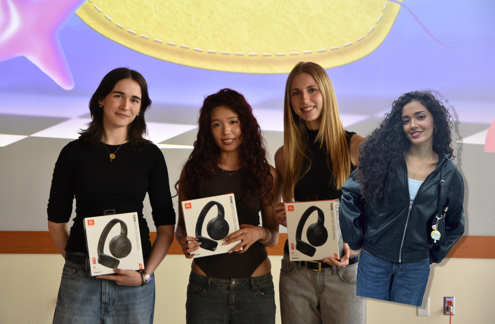

Custom label designed to storytell
local tradition for Canton Alley.
[ TEALEAVES x CSC ]
Little overview and description here...

OVERVIEW
Local Collaboration
explanation of TEALEAVES and CSC, the existing tea, why we collaborate, etc.
the image here could be the gold mountain tin next to the new canton alley tin to show the hsitory between companies and stand as a visual for the following mission statemnet
MISSION
How can I design a label that complements an existing collaborative blend, while still allowing it to stand out as its own indivdual product?
PROCESS
Initial Ideation
I wireframed in Apple's existing design system, utilizing their visual and interaction patterns. Designing within Apple Maps made sense for its deep iPhone integration, meaning your camera roll, music, and contacts are all one tap away. Prototyping on mobile also means ScrapBooks fits naturally into the moments travel actually happens.

Apple Maps UI

Lo-fidelity ScrapBooks UI

Final ScrapBooks UI
The Iteration
Most scrapbooking tools have an overwhelming amount of creation tools to choose from, so I worked on redesigning simplified navigation with only the essentials, for quick and easy scrapbooking.

Getting closer

Final Touches
FINAL
The Printed Design


maybe you could also add pictures of you exploring CSC learning lab? show you went and experienced it first hand
TAKEAWAYS
Takeaway 1 title
Explanation
NEXT PROJECT